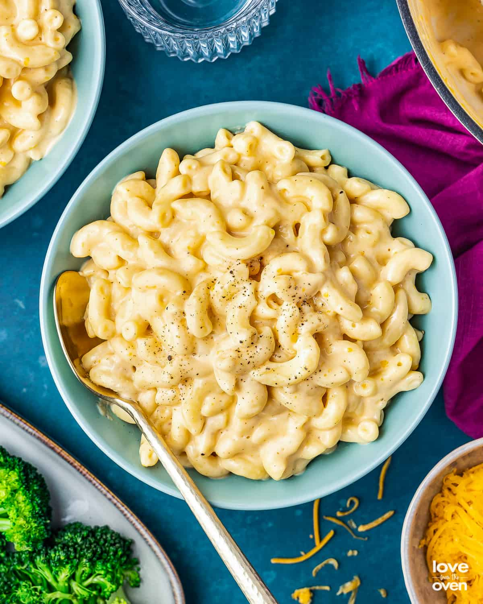

Stove Top Mac 'N Cheese Recipe

Description
Stove top mac and cheese is a quick and easy weeknight meal that will please even the pickiest eaters in your home! Macaroni noodles are perfectly cooked and doused in a gorgeous, cream cheese sauce and served in under 15 minutes.
Nothing beats homemade;and after trying this one=pot mac and cheese recipe, you'll never go back to the box!
Ingredients
- Elbow Macaroni
- Cheddar Cheese
- American Cheese
- Cream Cheese
- Butter
- Milk
- Seasonings- Salt & Pepper, Garlic powder, optional;fresh garic,paprika
Preparation Steps
- Start by putting a large pot of water on the stove over high heat. Generously salt the water and let it come to a boil. Once it's boiling add the pasta, cooke the noodles according to package directions. Once cooked al dente, drain the pasta from the pot. Turn off the stove.
- Before adding the noodles back into the pot, place butter, cream cheese and grated cheese into the pot.
Pour the drained pasta back into the pot on top o the cheeses and butter.- Cut American cheese slices into smaller pieces, add into pot on top of the noodles. Pour 1 cup of milk into the pot.
- Return pot to stovetop and bring burner to low heat. Stir for a few minutes, until thoroughly combined.
- Add in salt, garlic powder and any other optional spices of your choosing. Once the cheese begins to melt, add in remaining 3/4 cup milk. Continue to stir over low heat until everything is melted and combined. Patience is key! Once ready, remove pot from heat, serve immediately topped with fressh black pepper and enjoy!
Home